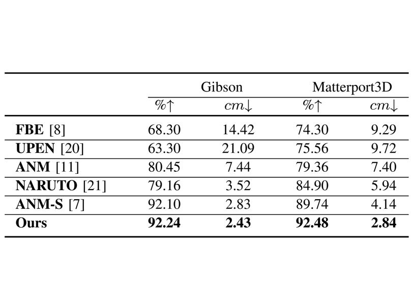
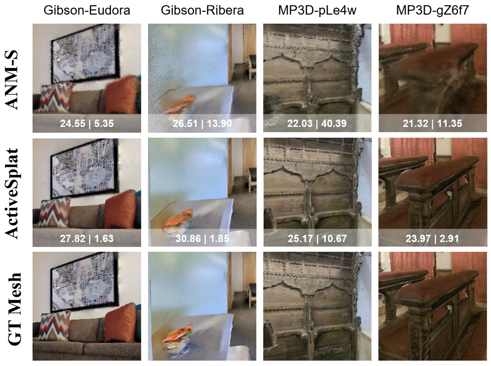
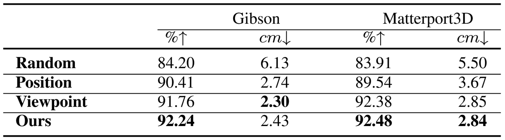
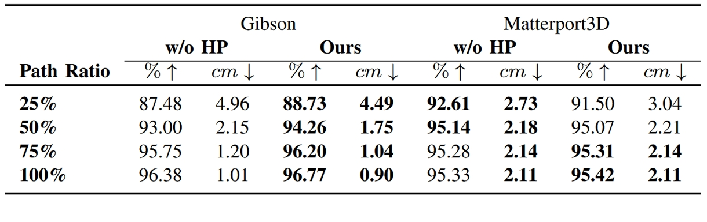

Abstract
We propose ActiveSplat, an autonomous high-fidelity reconstruction system leveraging Gaussian splatting.
Taking advantage of efficient and realistic rendering, the system establishes a unified framework for online mapping,
viewpoint selection, and path planning. The key to ActiveSplat is a hybrid map representation that integrates both dense information about the environment and a sparse abstraction of the workspace.
Therefore, the system leverages sparse topology for efficient viewpoint sampling and path planning, while exploiting view-dependent dense prediction for viewpoint selection,
facilitating efficient decision-making with promising accuracy and completeness.
A hierarchical planning strategy based on the topological map is adopted to mitigate repetitive trajectories and improve local granularity given limited time budgets,
ensuring high-fidelity reconstruction with photorealistic view synthesis.
Extensive experiments and ablation studies validate the efficacy of the proposed method in terms of reconstruction accuracy, data coverage, and exploration efficiency.
Overview of ActiveSplat
The autonomous reconstruction system employs a hybrid map that incorporates both dense predictions and sparse topological abstractions,
balancing exploration efficiency with reconstruction accuracy. Splatting Gaussians of interest on the fly forms a
consistent manner for online map updating, viewpoint selection, and path planning.
Note: Subregions are distinguished by node color, with node scores indicated by color intensity.
Online Active Mapping
We conduct extensive experiments on the
Gibson
and Matterport3D datasets. The online mapping process(x10 speed) is as follows:
Reconstruction results
We further apply adaptive density controls and additional optimization
(e.g. 3DGS,
2DGS)
to refine the online-constructed map given stored keyframe data.
The autonomous reconstruction results in photorealistic rendering and accurate geometry. The left and right sides of each image show rendered RGB and depth.
Compare with other methods

Quantitative comparison results: Comparison against relevant methods regarding the completeness of the observed data.

Qualitative comparison results: The novel view synthesis results of ours compared to the NeRF-based active mapping on Gibson and MP3D datasets.
Ablation Study
To validate the rationale behind our solution,
we conduct ablation studies in different modules to justify the effectiveness of each strategy for high-fidelity reconstruction.
We use four different strategy settings:
(1) Random denotes the random selection of unvisited Voronoi nodes;
(2) Position denotes exploration with only node selection but ignoring the target rotations;
(3) Viewpoint denotes the decoupled selection of both view positions and rotations;
(4) Ours incorporates multi-connected regions and hierarchical planning during the navigation.

Ablation of exploration strategy: Different exploration strategies lead to diverse behaviors for efficiency-accuracy tradeoffs.
Ablation of coverage evaluation: Merely 2D or 3D way of quantifying invisible areas does not best guide the agent.
Ablation of post-processing: The reconstruction results before and after post-processing.

Ablation of hierarchical planning: Hierarchical Planning (HP) enables the agent to achieve higher reconstruction completeness with shorter path lengths (P.L.).
Ablation of hierarchical planning (scene ID: Quantico):
The online reconstruction progress with increased completeness (%) and path length (m) at different stages (25%, 50%, 75%, 100%).
The hierarchical planning strategy results in better completeness and reduced path length during the exploration.
The proposed hierarchical planning strategy ensures that the agent thoroughly observes the surroundings of
nodes within a local sub-region before confidently transitioning to the next sub-region, thereby optimizing the global exploration path.
The following are the comparison results in the Gibson-Quantico and MP3D-RPmz2sHmrrY scenes:
w/o subregion
w subregion
Deployment in Real World
To evaluate the practical usage of the proposed system, we deploy it on an omnidirectional mobile robot.
The online reconstruction results, demonstrating the progressive and autonomous exploration of the indoor environment, are shown as follows:
The autonomous reconstruction results in photorealistic rendering and accurate geometry.
BibTeX
@article{li2025activesplat,
title = {ActiveSplat: High-Fidelity Scene Reconstruction through Active Gaussian Splatting},
author = {Li, Yuetao and Kuang, Zijia and Li, Ting and Hao, Qun and Yan, Zike and Zhou, Guyue and Zhang, Shaohui},
journal = {IEEE Robotics and Automation Letters},
year = {2025},
publisher = {IEEE}
}